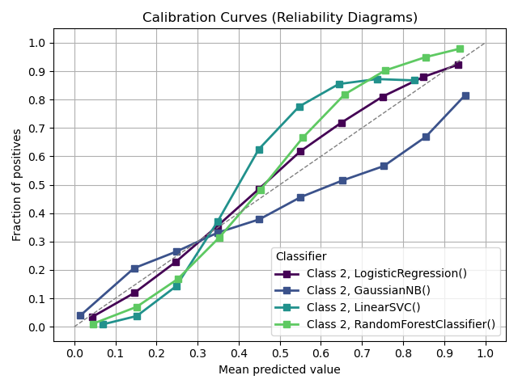
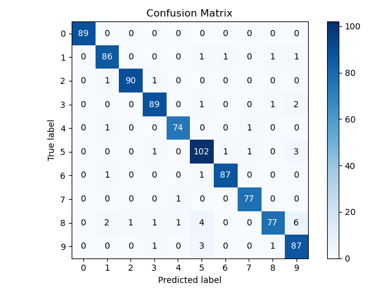
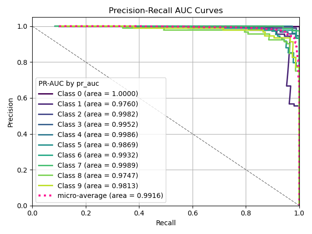
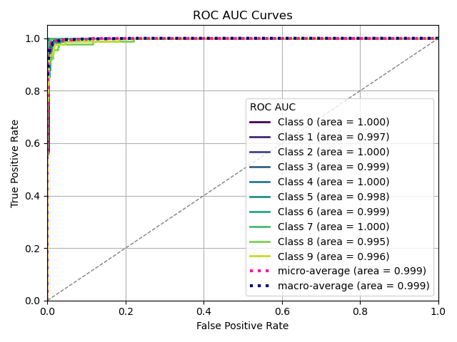
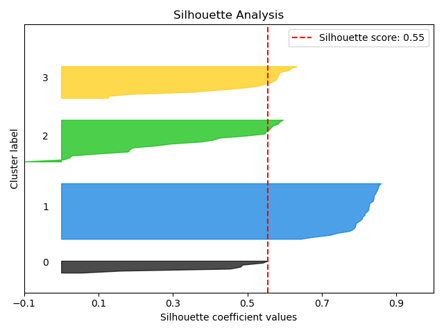

1.2. Metrics#
This module provides functions for evaluating and visualizing metrics for classification models, including calibration curves, confusion matrices, ROC curves, precision-recall curves, and silhouette scores.
This package/module is designed to be compatible with both Python 2 and Python 3. The imports below ensure consistent behavior across different Python versions by enforcing Python 3-like behavior in Python 2.
The scikitplot.metrics module includes plots for machine learning
evaluation metrics e.g. confusion matrix, silhouette scores, etc.
- scikitplot.metrics.plot_calibration_curve(y_true, y_prob_list, y_is_decision, title='Calibration Curves (Reliability Diagrams)', ax=None, figsize=None, title_fontsize='large', text_fontsize='medium', cmap=None, n_bins=10, clf_names=None, multi_class=None, class_index=1, class_names=None, classes_to_plot=[1], strategy='uniform')[source]#
Plot calibration curves for a set of classifier probability estimates.
This function plots calibration curves, also known as reliability curves, which are useful to assess the calibration of probabilistic models. For a well-calibrated model, the predicted probability should match the observed frequency of the positive class.
- Parameters:
y_true (array-like of shape (n_samples,)) – Ground truth (correct) target values.
y_prob_list (list of array-like, shape (n_samples, 2) or (n_samples,)) – A list containing the outputs of classifiers’ predict_proba or decision_function methods.
y_is_decision (list of bool) – A list indicating whether the classifier’s probability method is decision_function (True) or predict_proba (False).
title (str, optional, default='Calibration plots (Reliability Curves)') – Title of the generated plot.
ax (matplotlib.axes.Axes, optional) – The axes upon which to plot the curve. If None, a new figure and axes will be created.
figsize (tuple, optional) – Tuple denoting the figure size of the plot, e.g., (6, 6). Defaults to None.
title_fontsize (str or int, optional, default='large') – Font size of the plot title. Accepts Matplotlib-style sizes like “small”, “medium”, “large”, or an integer.
text_fontsize (str or int, optional, default='medium') – Font size of the plot text (axis labels). Accepts Matplotlib-style sizes like “small”, “medium”, “large”, or an integer.
cmap (str or matplotlib.colors.Colormap, optional, default=None) – Colormap used for plotting. If None, the default ‘viridis’ colormap is used. See Matplotlib colormap documentation for options.
n_bins (int, optional, default=10) – Number of bins to use in the calibration curve. A higher number requires more data to produce reliable results.
clf_names (list of str or None, optional, default=None) – A list of classifier names corresponding to the probability estimates in y_prob_list. If None, the names will be generated automatically as “Classifier 1”, “Classifier 2”, etc.
multi_class ({'ovr', 'multinomial', None}, optional, default=None) – Strategy for handling multiclass classification: - ‘ovr’: One-vs-Rest, plotting binary problems for each class. - ‘multinomial’ or None: Multinomial plot for the entire probability distribution. - Not Implemented: Strategy not yet available.
class_index (int, optional, default=1) – Index of the class of interest for multiclass classification. Ignored for binary classification. Related to multi_class parameter. Not Implemented.
class_names (list of str or None, optional, default=None) – List of class names for the legend. The order should match the classes in y_prob_list. If None, class indices will be used.
classes_to_plot (list-like, optional, default=[1]) – Specific classes to plot. If a given class does not exist, it will be ignored. If None, all classes are plotted.
strategy (str, optional, default='uniform') – Strategy used to define the widths of the bins: - ‘uniform’: Bins have identical widths. - ‘quantile’: Bins have the same number of samples and depend on y_prob_list.
- Returns:
ax – The axes on which the plot was drawn.
- Return type:
matplotlib.axes.Axes
Notes
The calibration curve is plotted for the class specified by classes_to_plot.
This function currently supports binary and multiclass classification.
Examples
>>> from sklearn.ensemble import RandomForestClassifier >>> from sklearn.linear_model import LogisticRegression >>> from sklearn.naive_bayes import GaussianNB >>> from sklearn.svm import LinearSVC >>> import scikitplot as skplt >>> rf = RandomForestClassifier() >>> lr = LogisticRegression() >>> nb = GaussianNB() >>> svm = LinearSVC() >>> rf_probas = rf.fit(X_train, y_train).predict_proba(X_test) >>> lr_probas = lr.fit(X_train, y_train).predict_proba(X_test) >>> nb_probas = nb.fit(X_train, y_train).predict_proba(X_test) >>> svm_scores = svm.fit(X_train, y_train).decision_function(X_test) >>> probas_list = [rf_probas, lr_probas, nb_probas, svm_scores] >>> clf_names = ['Random Forest', 'Logistic Regression', >>> 'Gaussian Naive Bayes', 'Support Vector Machine'] >>> skplt.metrics.plot_calibration_curve(y_test, probas_list, y_is_decision)
- scikitplot.metrics.plot_confusion_matrix(y_true, y_pred, labels=None, true_labels=None, pred_labels=None, title=None, normalize=False, hide_zeros=False, hide_counts=False, x_tick_rotation=0, ax=None, figsize=None, cmap='Blues', title_fontsize='large', text_fontsize='medium', show_colorbar=True)[source]#
Generates a confusion matrix plot from predictions and true labels.
The confusion matrix is a summary of prediction results that shows the counts of true and false positives and negatives for each class. This function also provides options for normalizing, hiding zero values, and customizing the plot appearance.
- Parameters:
y_true (array-like, shape (n_samples,)) – Ground truth (correct) target values.
y_pred (array-like, shape (n_samples,)) – Estimated targets as returned by a classifier.
labels (array-like, shape (n_classes), optional) – List of labels to index the matrix. This may be used to reorder or select a subset of labels. If None, labels appearing at least once in y_true or y_pred are used in sorted order. (new in v0.2.5)
true_labels (array-like, optional) – The true labels to display. If None, all labels are used.
pred_labels (array-like, optional) – The predicted labels to display. If None, all labels are used.
title (string, optional) – Title of the generated plot. Defaults to “Confusion Matrix” if normalize is True. Otherwise, defaults to “Normalized Confusion Matrix”.
normalize (bool, optional, default=False) – If True, normalizes the confusion matrix before plotting.
hide_zeros (bool, optional, default=False) – If True, cells containing a value of zero are not plotted.
hide_counts (bool, optional, default=False) – If True, counts are not overlaid on the plot.
x_tick_rotation (int, optional, default=0) – Rotates x-axis tick labels by the specified angle. Useful when labels overlap.
ax (matplotlib.axes.Axes, optional) – The axes upon which to plot the confusion matrix. If None, a new set of axes is created.
figsize (tuple of int, optional) – Tuple denoting figure size of the plot, e.g., (6, 6). Defaults to None.
cmap (None, str, or matplotlib.colors.Colormap, optional, default='viridis') – Colormap used for plotting. Options include ‘viridis’, ‘plasma’, ‘inferno’, etc. Refer to the Matplotlib Colormap documentation for available choices.
title_fontsize (string or int, optional, default="large") – Font size for the plot title. Use “small”, “medium”, “large”, or integer values.
text_fontsize (string or int, optional, default="medium") – Font size for text in the plot. Use “small”, “medium”, “large”, or integer values.
show_colorbar (bool, optional, default=True) – If False, the colorbar is not displayed.
- Returns:
ax – The axes on which the plot was drawn.
- Return type:
matplotlib.axes.Axes
Notes
Ensure that y_true and y_pred have the same shape and contain valid class labels. The normalize parameter applies only to the confusion matrix plot. Adjust cmap and x_tick_rotation to customize the appearance of the plot. The show_colorbar parameter controls whether a colorbar is displayed.
Examples
>>> import scikitplot as skplt >>> from sklearn.ensemble import RandomForestClassifier >>> rf = RandomForestClassifier() >>> rf.fit(X_train, y_train) >>> y_pred = rf.predict(X_test) >>> skplt.metrics.plot_confusion_matrix(y_test, y_pred, normalize=True)
- scikitplot.metrics.plot_precision_recall(y_true, y_probas, title='Precision-Recall AUC Curves', ax=None, figsize=None, title_fontsize='large', text_fontsize='medium', cmap=None, class_index=1, multi_class=None, class_names=None, classes_to_plot=None, plot_micro=True, plot_macro=False, show_labels=True, digits=4, area='pr_auc')[source]#
Generates the Precision-Recall Curves from labels and predicted scores/probabilities.
The Precision-Recall curve plots the precision against the recall for different threshold values. The area under the curve (AUC) represents the classifier’s performance. This function supports both binary and multiclass classification tasks.
- Parameters:
y_true (array-like, shape (n_samples,)) – Ground truth (correct) target values.
y_probas (array-like, shape (n_samples,) or (n_samples, n_classes)) – Predicted probabilities for each class or only target class probabilities. If 1D, it is treated as probabilities for the positive class in binary or multiclass classification with the class_index.
title (str, optional, default='Precision-Recall AUC Curves') – Title of the generated plot.
ax (matplotlib.axes.Axes, optional, default=None) – The axes on which to plot. If None, a new figure and axes are created.
figsize (tuple of int, optional, default=None) – Size of the figure (width, height) in inches.
title_fontsize (str or int, optional, default='large') – Font size for the plot title.
text_fontsize (str or int, optional, default='medium') – Font size for the text in the plot.
cmap (None, str or matplotlib.colors.Colormap, optional, default='viridis') – Colormap used for plotting. Options include ‘viridis’, ‘plasma’, ‘inferno’, etc. See Matplotlib Colormap documentation for available choices.
class_index (int, optional, default=1) – Index of the class of interest for multi-class classification. Ignored for binary classification.
multi_class ({'ovr', 'multinomial', None}, optional, default=None) – Strategy for handling multiclass classification: - ‘ovr’: One-vs-Rest, plotting binary problems for each class. - ‘multinomial’ or None: Multinomial plot for the entire probability distribution.
class_names (list of str, optional, default=None) – List of class names for the legend. Order should match the order of classes in y_probas.
classes_to_plot (list-like, optional, default=None) – Specific classes to plot. If a given class does not exist, it will be ignored. If None, all classes are plotted.
plot_micro (bool, optional, default=True) – Whether to plot the micro-average Precision-Recall AUC curve.
plot_macro (bool, optional, default=False) – Whether to plot the macro-average Precision-Recall AUC curve.
show_labels (bool, optional, default=True) – Whether to display the legend labels.
digits (int, optional, default=3) – Number of digits for formatting AUC values in the plot.
area ({'average_precision', 'pr_auc'}, optional, default='pr_auc') – Strategy for calculating the area score: - ‘pr_auc’: Precision-Recall AUC. - ‘average_precision’: Average Precision score, closely related but computed differently.
- Returns:
The axes with the plotted Precision-Recall AUC curves.
- Return type:
matplotlib.axes.Axes
Notes
The implementation is specific to binary classification. For multiclass problems, the ‘ovr’ or ‘multinomial’ strategies can be used. When multi_class=’ovr’, the plot focuses on the specified class (class_index).
Examples
>>> import matplotlib.pyplot as plt >>> from sklearn.datasets import load_breast_cancer as load_data # binary >>> from sklearn.model_selection import train_test_split >>> from sklearn.naive_bayes import GaussianNB >>> import scikitplot as skplt >>> X, y = load_data(return_X_y=True) >>> X_train, X_test, y_train, y_test = train_test_split(X, y, test_size=0.5, random_state=0) >>> model = GaussianNB() >>> model.fit(X_train, y_train) >>> y_probas = model.predict_proba(X_test) >>> skplt.metrics.plot_precision_recall(y_test, y_probas)
- scikitplot.metrics.plot_roc(y_true, y_probas, title='ROC AUC Curves', ax=None, figsize=None, title_fontsize='large', text_fontsize='medium', cmap=None, class_index=1, multi_class=None, class_names=None, classes_to_plot=None, plot_micro=True, plot_macro=True, show_labels=True, digits=3)[source]#
Generates the ROC AUC curves from labels and predicted scores/probabilities.
The ROC (Receiver Operating Characteristic) curve plots the true positive rate against the false positive rate at various threshold settings. The AUC (Area Under the Curve) represents the degree of separability achieved by the classifier. This function supports both binary and multiclass classification tasks.
- Parameters:
y_true (array-like, shape (n_samples,)) – Ground truth (correct) target values.
y_probas (array-like, shape (n_samples,) or (n_samples, n_classes)) – Predicted probabilities for each class or only target class probabilities. If 1D, it is treated as probabilities for the positive class in binary or multiclass classification with the class_index.
title (str, optional, default='ROC AUC Curves') – Title of the generated plot.
ax (matplotlib.axes.Axes, optional, default=None) – The axes on which to plot. If None, a new figure and axes are created.
figsize (tuple of int, optional, default=None) – Size of the figure (width, height) in inches.
title_fontsize (str or int, optional, default='large') – Font size for the plot title.
text_fontsize (str or int, optional, default='medium') – Font size for the text in the plot.
cmap (None, str or matplotlib.colors.Colormap, optional, default='viridis') – Colormap used for plotting. Options include ‘viridis’, ‘plasma’, ‘inferno’, etc. See Matplotlib Colormap documentation for available choices.
class_index (int, optional, default=1) – Index of the class of interest for multi-class classification. Ignored for binary classification.
multi_class ({'ovr', 'multinomial', None}, optional, default=None) – Strategy for handling multiclass classification: - ‘ovr’: One-vs-Rest, plotting binary problems for each class. - ‘multinomial’ or None: Multinomial plot for the entire probability distribution.
class_names (list of str, optional, default=None) – List of class names for the legend. Order should match the order of classes in y_probas.
classes_to_plot (list-like, optional, default=None) – Specific classes to plot. If a given class does not exist, it will be ignored. If None, all classes are plotted.
plot_micro (bool, optional, default=False) – Whether to plot the micro-average ROC AUC curve.
plot_macro (bool, optional, default=False) – Whether to plot the macro-average ROC AUC curve.
show_labels (bool, optional, default=True) – Whether to display the legend labels.
digits (int, optional, default=3) – Number of digits for formatting AUC values in the plot.
- Returns:
The axes with the plotted ROC AUC curves.
- Return type:
matplotlib.axes.Axes
Notes
The implementation is specific to binary classification. For multiclass problems, the ‘ovr’ or ‘multinomial’ strategies can be used. When multi_class=’ovr’, the plot focuses on the specified class (class_index).
Examples
>>> import matplotlib.pyplot as plt >>> from sklearn.datasets import load_breast_cancer as load_data # binary >>> from sklearn.model_selection import train_test_split >>> from sklearn.naive_bayes import GaussianNB >>> import scikitplot as skplt >>> X, y = load_data(return_X_y=True) >>> X_train, X_test, y_train, y_test = train_test_split(X, y, test_size=0.5, random_state=0) >>> model = GaussianNB() >>> model.fit(X_train, y_train) >>> y_probas = model.predict_proba(X_test) >>> skplt.metrics.plot_roc(y_test, y_probas)
- scikitplot.metrics.plot_silhouette(X, cluster_labels, title='Silhouette Analysis', metric='euclidean', copy=True, ax=None, figsize=None, cmap='nipy_spectral', title_fontsize='large', text_fontsize='medium', digits=3)[source]#
Plots silhouette analysis of clusters provided.
Silhouette analysis is a method of interpreting and validating the consistency within clusters of data. It measures how similar an object is to its own cluster compared to other clusters.
- Parameters:
X (array-like, shape (n_samples, n_features)) – Data to cluster, where n_samples is the number of samples and n_features is the number of features.
cluster_labels (array-like, shape (n_samples,)) – Cluster label for each sample.
title (str, optional, default='Silhouette Analysis') – Title of the generated plot.
metric (str or callable, optional, default='euclidean') – The metric to use when calculating distance between instances in a feature array. If metric is a string, it must be one of the options allowed by sklearn.metrics.pairwise.pairwise_distances. If X is the distance array itself, use “precomputed” as the metric.
copy (bool, optional, default=True) – Determines whether fit is used on clf or on a copy of clf.
ax (matplotlib.axes.Axes, optional, default=None) – The axes upon which to plot the curve. If None, a new figure and axes are created.
figsize (tuple of int, optional, default=None) – Size of the figure (width, height) in inches.
cmap (str or matplotlib.colors.Colormap, optional, default='viridis') – Colormap used for plotting the projection. See Matplotlib Colormap documentation for available options. - https://matplotlib.org/users/colormaps.html
title_fontsize (str or int, optional, default='large') – Font size for the plot title.
text_fontsize (str or int, optional, default='medium') – Font size for the text in the plot.
digits (int, optional, default=3) – Number of digits for formatting output floating point values.
- Returns:
The axes on which the plot was drawn.
- Return type:
matplotlib.axes.Axes
Examples
>>> import scikitplot as skplt >>> from sklearn.cluster import KMeans >>> import matplotlib.pyplot as plt >>> # Example data X >>> kmeans = KMeans(n_clusters=4, random_state=1) >>> cluster_labels = kmeans.fit_predict(X) >>> skplt.metrics.plot_silhouette(X, cluster_labels) >>> plt.show()